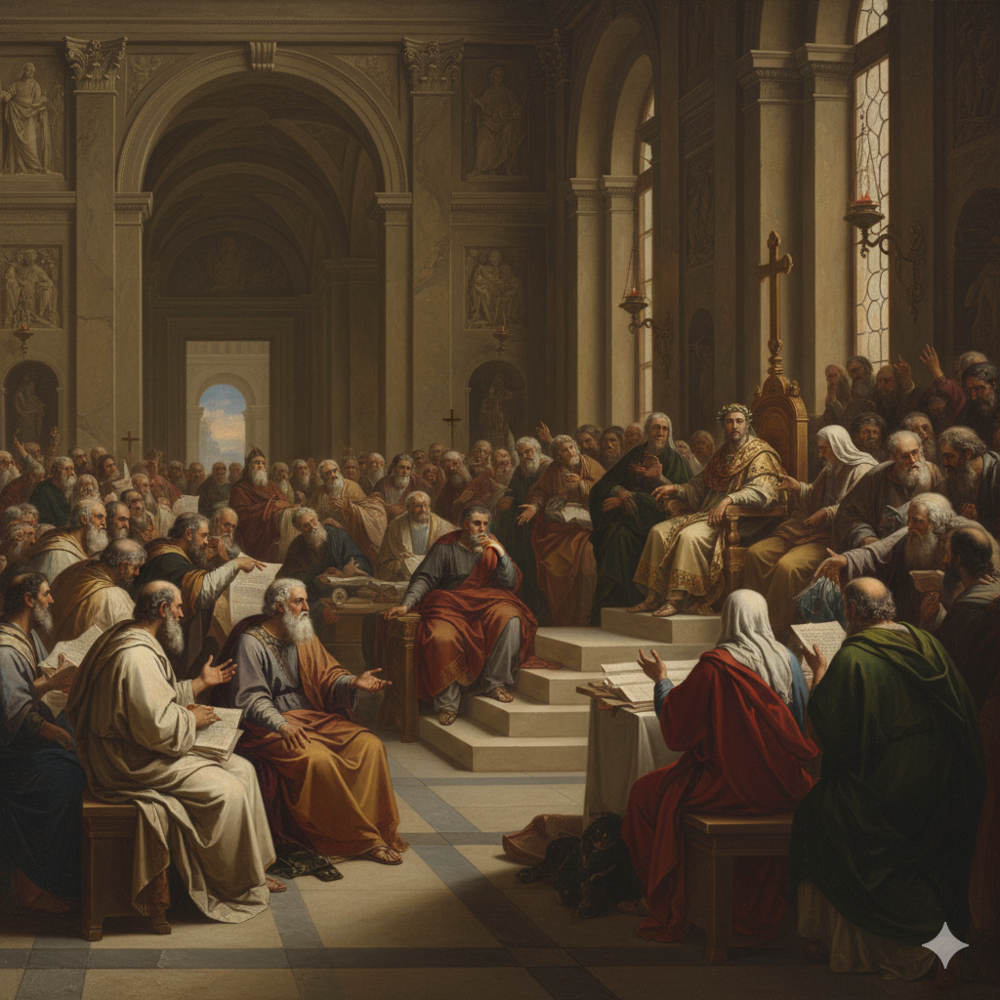

專論總覽
從使徒時代到現代：神的教會如何見證真理 | From Apostolic Age to Modern Times: How the Church Witnesses Truth
本篇已按原有標題拆成可獨立閱讀的分題。請選一題進入；正文未經改寫，只把長頁分開。
01
引言
引言 教會歷史是神在人類歷史中工作的見證。
02
核心問題
核心問題 真理的持守 教會如何在歷史中持守聖經真理？
03
歷史時間軸
教會歷史時間軸 33-313 AD 早期教會時期 Early Church Period 從五旬節聖靈降臨開始，使徒們在耶路撒冷建立教會，隨後福音傳到外邦。

04
重要教義的確立
重要教義的確立 三位一體 尼西亞會議（325 AD）確立了三位一體的教義 三位一體 確立了父、子、聖靈是同一位神，但有三個不同的位格。
05
我們的立場
我們的立場 我們相信教會歷史是神在人類歷史中工作的見證。

06
實踐意義
實踐意義 重視聖經 學習宗教改革的精神，以聖經為信仰和生活的最高權威，持續研讀和遵行神的話語。
07
互動思考
互動思考 問題 1：宗教改革最重要的貢獻是什麼？
08
結語
結語 教會歷史是神在人類歷史中工作的見證。